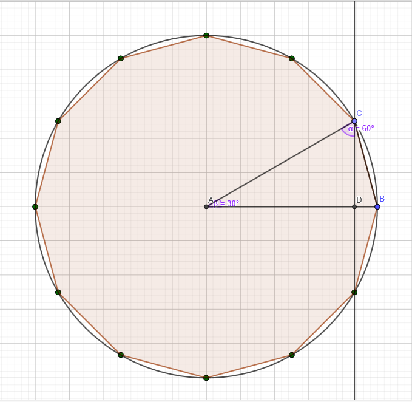

EPSF001 H - Part1 解説
概要
\(9\)問の数学の問題があるので、解いてください。
いろはコンのこの問題のリスペクトで、中学数学が理解出来ていたら解けるって感じの問題です。
問題文解説
\((0),(1)\)問題の通りに計算して下さい。\([1]=0.0025\)
\((2)\)与式に\(x=2\)を代入して整理すると、\(4a^3b-ab^3=42\)より
$$ab(2a+b)(2a-b)=2\times3\times7\cdots(i)$$ここで、\(2a-b>0\)かつ\(0>a-b\)より
$$2a+b>b>a>2a-b\cdots(ii)$$\((i),(ii)\)より、\(2a-b=1,a=2,b=3,2a+b=7\)となる。これを与式に代入して整理すると、
\(x^2+24x-52=0\)より、\((x-2)(x+26)=0\ \)
したがって、\([2]=-26\)
\((3)3\)の倍数は各桁の和が\(3\)の倍数であり、このような組は\((0,1,2,3),(0,2,3,4)\)の\(2\)組だけである。
なのでこの\(2\)組を並び替えたもののうち、条件を満たすものの個数を(樹形図などで)数えれば良い。
これを数えると、\([3]=17\)である。
\((4)\)与式を変形すると、\(\sqrt{\frac{20-2\sqrt{99}}{2}},20^2-4\times99=2^2\)より、二重根号が外せると分かる。
外せると分かったので二重根号を外すと、\(\frac{\sqrt{11}-\sqrt{9}}{\sqrt{2}}=\frac{\sqrt{22}-3\sqrt{2}}{2}\)
これ以上簡単にできないので、\([4]=\frac{\sqrt{22}-3\sqrt{2}}{2}\)である。
\((5)\)ヒポクラテスの定理より、正方形Sの面積\(=t\)である。三平方の定理より、円Rの半径\(r=\frac{\sqrt{2t}}{2}\)と分かる。

上図は、円Sに内接する正12角形であり、\(\triangle{ABC}\)は,この正12角形を12等分したものである。
このとき、\(AB=AC=\frac{\sqrt{2t}}{2}\)であり、三平方の定理より\(CD=\frac{r}{2}=\frac{\sqrt{2t}}{4}\)である。
従って、\(\triangle{ABC}=\frac{1}{2}\times\frac{\sqrt{2t}}{2}\times\frac{\sqrt{2t}}{4}=\frac{t}{8}\)
円Sに内接する正12角形の面積は\(\triangle{ABC}\)の\(12\)倍なので、\([5]=1.5t\)
\((6)\)この数列をいくつもの数列を連結したものと考えると、
\(N\)番目の数列は長さは\(2N-1\)で\(2N-1\)から\(1\)まで降順に並んでいると考えられる。
このとき、\(9\)回目の\(2\)が現れるのは\(10\)番目の数列の右から\(2\)番目である。
従って、\([6]=2\times 55-1\times 10-1=99\)である。
\((7)\)様々な解き方が存在するが、多くの人が補助線を引く方針で解いたと思うので別解を紹介します。
\(\triangle{ABC}\)の面積を\(S\)とすると、\(S=\frac{1}{2}\times 3\times 15\times\sin{A}\cdots (i)\)
ここで、角の二等分線の性質より、\((3+15)\times 4=2\times 3\times 15\times\cos{\frac{A}{2}}\)
変形して、\(\cos{\frac{A}{2}}=\frac{4}{5}\)なので、\(\sin{\frac{A}{2}}=\sqrt{1-\frac{4^2}{5^2}}=\frac{3}{5}\)
二倍角の定理より、\(\sin{A}=2\sin{\frac{A}{2}}\cos{\frac{A}{2}}=2\times\frac{3}{5}\times\frac{4}{5}=\frac{24}{25}\)
\((i)\)に代入して、\(S=\frac{45}{2}\times\frac{24}{25}=\frac{108}{5}\)である。従って\([7]=21.6\)
\((8)\)この問題は全探索で解きましょう。特に解説することはないです。